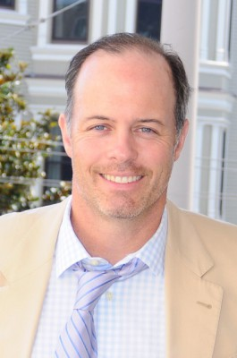

#12298 Twisted - Der erste Verdacht
Alternativ: Twisted (Englischer Titel)


 IMDB-Wertung: 5.3 / 10
IMDB-Wertung: 5.3 / 10  Tomatometer: 1
Tomatometer: 1  Metascore: 26
Metascore: 26 
Gerade wurde Jessica Sheppard zum Police Inspector befördert, schon muß sie Jagd auf einen Serienkiller machen. Dieser scheint auch die junge Polizistin im Visier zu haben, denn zu ihrem Entsetzen stellt Jessica fest, daß sie alle Opfer des Mörders kannte! Bei ihren Kollegen ruft dies Misstrauen hervor und auch das Verhalten ihres neuen Teampartners ist sehr seltsam. Aber für ihren Vorgesetzten steht sie und ihre Arbeit über jedem Verdacht. Als die Spur der Morde immer blutiger wird und sich mehr und mehr Indizien gegen Jessica richten, stellt sich die Frage, ob sie am Ende doch selbst der brutale Killer ist, den alle suchen.
Jahr: 2004
Dauer: 93 Minuten
FSK: 12
Land: Deutschland Studio: UIPTonspuren: - , - ,
Untertitel:
Auflösung: 1080p (1920x1080) Größe: 6737 MB
Genre: Thriller, Drama, Krimi, Mystery
Regisseur:  Philip Kaufman
Philip Kaufman
Drehbuch: Sarah Thorp
Soundtrack: Mark Isham
Darsteller:
 Ashley Judd als Jessica Shepard
Ashley Judd als Jessica Shepard Samuel L. Jackson als John Mills
Samuel L. Jackson als John Mills Andy Garcia als Mike Delmarco
Andy Garcia als Mike Delmarco David Strathairn als Dr. Melvin Frank
David Strathairn als Dr. Melvin Frank Russell Wong als Lieutenant Tong
Russell Wong als Lieutenant Tong Camryn Manheim als Lisa
Camryn Manheim als Lisa Mark Pellegrino als Jimmy Schmidt
Mark Pellegrino als Jimmy Schmidt Titus Welliver als Dale Becker
Titus Welliver als Dale Becker D.W. Moffett als Ray Porter
D.W. Moffett als Ray Porter Richard T. Jones als Wilson Jefferson
Richard T. Jones als Wilson Jefferson Leland Orser als Edmund Cutler
Leland Orser als Edmund Cutler- Joe Duer als Larry Geber
- Jim Hechim als Bob Sherman
- David Tenenbaum als Cop
 Leonard L. Thomas als Mills' Aide
Leonard L. Thomas als Mills' Aide Joe Drago als Man at Bar
Joe Drago als Man at Bar- Ofri Fuchs als Girl at Saloon
- Ian Baptiste als Police Officer (uncredited)
- Christopher Behrens als Bar Patron (uncredited)
-  Geoff Callan als Detective (uncredited)
 Veronica Cartwright als Landlady (uncredited)
Veronica Cartwright als Landlady (uncredited) Cabran E. Chamberlain als Policeman (uncredited)
Cabran E. Chamberlain als Policeman (uncredited)- Brian Danker als Homicide Inspector (uncredited)
- David Hern als Homicide Detective (uncredited)
- Jeffrey Moon als Corp. Detective (uncredited)
- Mark A. Neely als Police Officer (uncredited)
- Jon Read als Homicide Inspector (uncredited)
- Brian Sampson als Ambulance Tech (uncredited)
- Christabel Savalas als Chambermaid (uncredited)
- Tony Vella als Biker (uncredited)
 James D. Weston II als Police Officer (uncredited)
James D. Weston II als Police Officer (uncredited)- Sherrie La'Marr Wheeler als City Worker (uncredited)
- James Oliver Bullock als John Flanagan
- William Hall als Chip Marshall
- Drew Letchworth als Bartender
- Diane Amos als Jones
- Anni Long als Cop
- Bruce Marovich als Lieutenant Marovich
- Danny Lopez als Sergeant Lopez
- Lyn Tomioka als Yawara Instructor
- Leslie Kaye als Forensic Lab Technician
- Angela Tse als Forensic Lab Technician
- Angelo Miller als Saloon Bouncer
- Peter Ridet als Cop Bar Bartender
- Garrett Townsend als Man at Saloon
- Victor Vallejo als Inspector Vallejo
- Carola Zertuche als Flamenco Dancer
- Chandler Bolt als Pensive Drunk (uncredited)
- Baldwin Chiu als CSI Photographer (uncredited)
- Am Fong als Pedestrian (uncredited)
Datei: X:\2004(N-Z)\Twisted - Der erste Verdacht (2004, FSK12, 1920x1080).mkv seit 12.01.2020
Festplatte: Gemischt-01+Anime
 Es gibt insgesamt 54 Filme in der Gruppe '2004(N-Z)'
Es gibt insgesamt 54 Filme in der Gruppe '2004(N-Z)'